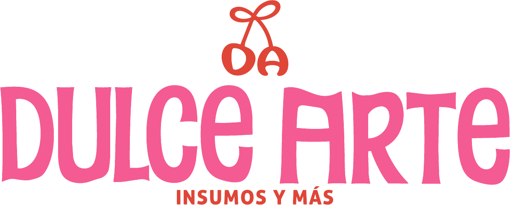
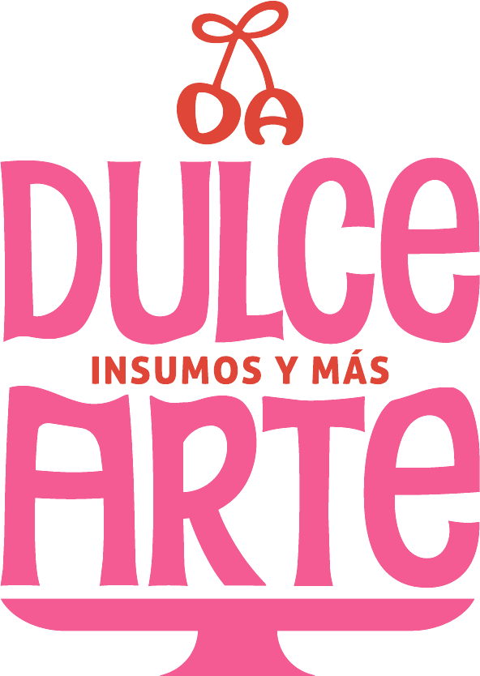
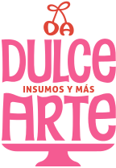

Dulce
Una expresión cercana, alegre y llena de color.


Manual de identidad visual · 2026
Una guía para mantener cada expresión de Dulce Arte con la misma personalidad.
Explorar la identidadPresentación
Este manual reúne los criterios que definen la identidad visual de Dulce Arte — Insumos y Más. Su propósito es asegurar una comunicación gráfica sólida, coherente y uniforme en cada punto de contacto.
Una expresión cercana, alegre y llena de color.
La repostería entendida como una forma de arte.
Una presencia reconocible en todos los formatos.
02 · Sistema de marca
Selecciona una versión, cambia el fondo y prueba su tamaño. La proporción y la composición siempre deben permanecer intactas.

El isotipo se utiliza como firma compacta cuando el espacio es reducido o la marca ya está contextualizada.
03 · Paleta de colores
El rosa lidera la identidad; el rojo aporta energía y el marrón da profundidad. El blanco y el negro amplían la paleta como tonos de apoyo.
04 · Tipografía
Tres estilos tipográficos construyen una jerarquía expresiva: carácter, claridad y presencia.
Cada creación es una obra
Uso: logotipo y expresiones de marcaCada creación es una obra
Uso: textos, información y comunicaciónCada creación es una obra
Uso: titulares y mensajes destacados05 · Usos
La marca debe conservar su forma, colores y elementos. Estas reglas garantizan reconocimiento y legibilidad.
Respeta la proporción, el espacio libre y la paleta oficial.
No estires ni comprimas el logotipo.
Mantén siempre la orientación original.
Evita colores ajenos a la paleta oficial.
06 · Aplicaciones
Una identidad flexible, pensada para acompañar cada experiencia: desde una publicación hasta el empaque final.